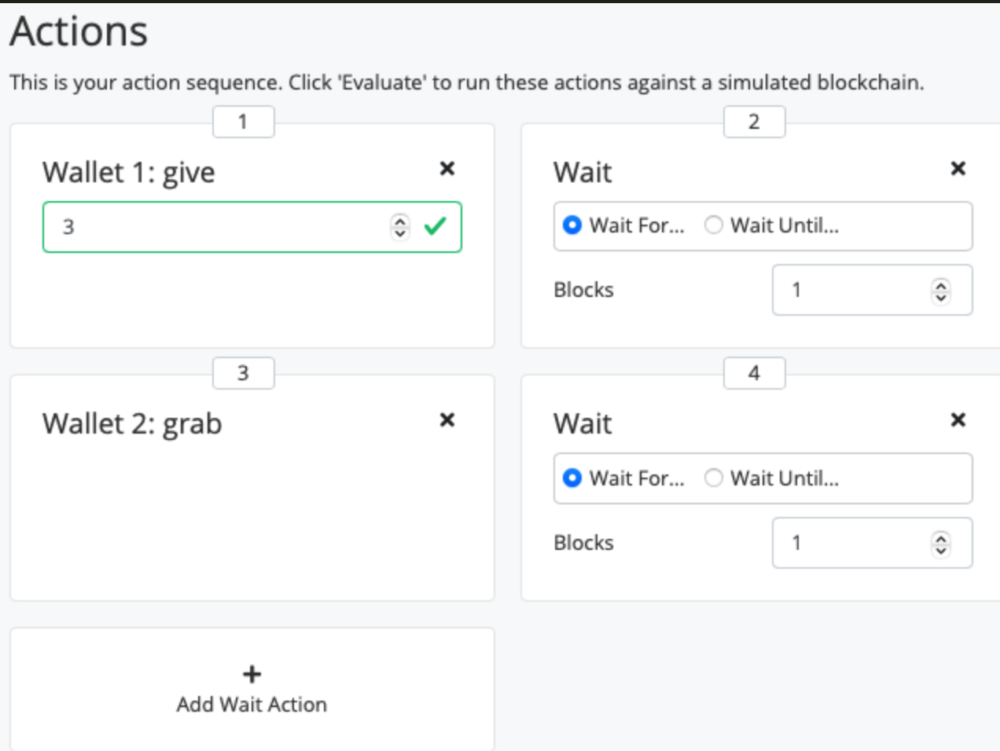
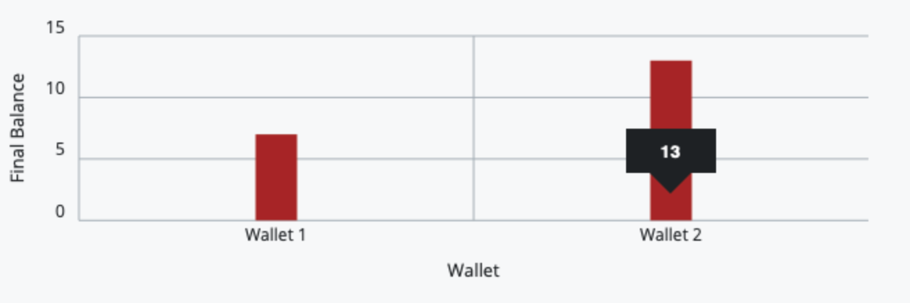

<!DOCTYPE html>
<html lang="en">
<head>
    <meta charset="utf-8">
    <meta http-equiv="X-UA-Compatible" content="IE=edge">
    <meta name="google-site-verification" content="xBT4GhYoi5qRD5tr338pgPM5OWHHIDR6mNg1a3euekI" />
    <meta name="viewport" content="width=device-width, initial-scale=1">
    <meta name="description" content="">
    <meta name="keyword"  content="">
    <link rel="shortcut icon" href="/blog/img/favicon.ico">

    <title>
        
        Plutus-Pioneer-lesson-02 - undefined
        
    </title>

    <!-- Custom CSS -->
    <link rel="stylesheet" href="/blog/css/aircloud.css">
    <link rel="stylesheet" href="/blog/css/gitment.css">
    <!--<link rel="stylesheet" href="https://imsun.github.io/gitment/style/default.css">-->
    <link href="//at.alicdn.com/t/font_620856_pl6z7sid89qkt9.css" rel="stylesheet" type="text/css">
    <!-- ga & ba script hoook -->
    <script></script>
</head>

<body>

<div class="site-nav-toggle" id="site-nav-toggle">
    <button>
        <span class="btn-bar"></span>
        <span class="btn-bar"></span>
        <span class="btn-bar"></span>
    </button>
</div>

<div class="index-about">
    <i> 所有的善恶都是我，良心一路走来依旧清澈鲜活... </i>
</div>

<div class="index-container">
    
    <div class="index-left">
        
<div class="nav" id="nav">
    <div class="avatar-name">
        <div class="avatar">
            
        </div>
        <div class="name">
            <i>不负如来不负卿</i>
        </div>
    </div>
    <div class="contents" id="nav-content">
        <ul>
            <li >
                <a href="/blog/">
                    <i class="iconfont icon-shouye1"></i>
                    <span>主页</span>
                </a>
            </li>
            <li >
                <a href="/blog/tags">
                    <i class="iconfont icon-biaoqian1"></i>
                    <span>标签</span>
                </a>
            </li>
            <li >
                <a href="/blog/archive">
                    <i class="iconfont icon-guidang2"></i>
                    <span>存档</span>
                </a>
            </li>
            <li >
                <a href="/blog/about/">
                    <i class="iconfont icon-guanyu2"></i>
                    <span>关于</span>
                </a>
            </li>
            
            <li>
                <a id="search">
                    <i class="iconfont icon-sousuo1"></i>
                    <span>搜索</span>
                </a>
            </li>
            
        </ul>
    </div>
    
        <div id="toc" class="toc-article">
    <ol class="toc"><li class="toc-item toc-level-3"><a class="toc-link" href="#礼物"><span class="toc-text">礼物</span></a></li><li class="toc-item toc-level-3"><a class="toc-link" href="#低级别，无类型的，链上验证脚本"><span class="toc-text">低级别，无类型的，链上验证脚本</span></a><ol class="toc-child"><li class="toc-item toc-level-4"><a class="toc-link" href="#mkValidator函数"><span class="toc-text">mkValidator函数</span></a></li><li class="toc-item toc-level-4"><a class="toc-link" href="#Validator-Script-验证程序脚本"><span class="toc-text">Validator Script(验证程序脚本)</span></a></li><li class="toc-item toc-level-4"><a class="toc-link" href="#Script-Address-脚本地址"><span class="toc-text">Script Address(脚本地址)</span></a></li><li class="toc-item toc-level-4"><a class="toc-link" href="#钱包代码"><span class="toc-text">钱包代码</span></a></li><li class="toc-item toc-level-4"><a class="toc-link" href="#错误处理-烧掉"><span class="toc-text">错误处理(烧掉)</span></a></li><li class="toc-item toc-level-4"><a class="toc-link" href="#FortyTwo"><span class="toc-text">FortyTwo</span></a></li></ol></li><li class="toc-item toc-level-3"><a class="toc-link" href="#高级别的，类型化的，链上验证脚本"><span class="toc-text">高级别的，类型化的，链上验证脚本</span></a><ol class="toc-child"><li class="toc-item toc-level-4"><a class="toc-link" href="#自定义数据类型"><span class="toc-text">自定义数据类型</span></a></li></ol></li><li class="toc-item toc-level-3"><a class="toc-link" href="#作业1"><span class="toc-text">作业1</span></a></li><li class="toc-item toc-level-3"><a class="toc-link" href="#作业2"><span class="toc-text">作业2</span></a></li><li class="toc-item toc-level-3"><a class="toc-link" href="#其他"><span class="toc-text">其他</span></a><ol class="toc-child"><li class="toc-item toc-level-4"><a class="toc-link" href="#Data类型"><span class="toc-text">Data类型</span></a></li><li class="toc-item toc-level-4"><a class="toc-link" href="#Template-Haskell"><span class="toc-text">Template Haskell</span></a></li></ol></li></ol>
</div>
    
</div>


<div class="search-field" id="search-field">
    <div class="search-container">
        <div class="search-input">
            <span id="esc-search"> <i class="icon-fanhui iconfont"></i></span>
            <input id="search-input"/>
            <span id="begin-search">搜索</span>
        </div>
        <div class="search-result-container" id="search-result-container">

        </div>
    </div>
</div>
        <div class="index-about-mobile">
            <i> 所有的善恶都是我，良心一路走来依旧清澈鲜活... </i>
        </div>
    </div>
    
    <div class="index-middle">
        <!-- Main Content -->
        


<div class="post-container">
    <div class="post-title">
        Plutus-Pioneer-lesson-02
    </div>

    <div class="post-meta">
        <span class="attr">发布于：<span>2021-04-13 20:00:00</span></span>
        
        <span class="attr">标签：/
        
        <a class="tag" href="/blog/tags/#Haskell" title="Haskell">Haskell</a>
        <span>/</span>
        
        <a class="tag" href="/blog/tags/#Plutus" title="Plutus">Plutus</a>
        <span>/</span>
        
        <a class="tag" href="/blog/tags/#DApps" title="DApps">DApps</a>
        <span>/</span>
        
        <a class="tag" href="/blog/tags/#智能合约" title="智能合约">智能合约</a>
        <span>/</span>
        
        <a class="tag" href="/blog/tags/#Cardano" title="Cardano">Cardano</a>
        <span>/</span>
        
        <a class="tag" href="/blog/tags/#Pioneer" title="Pioneer">Pioneer</a>
        <span>/</span>
        
        <a class="tag" href="/blog/tags/#Contract" title="Contract">Contract</a>
        <span>/</span>
        
        <a class="tag" href="/blog/tags/#Validator" title="Validator">Validator</a>
        <span>/</span>
        
        <a class="tag" href="/blog/tags/#Redeemer" title="Redeemer">Redeemer</a>
        <span>/</span>
        
        
        </span>
        <span class="attr">访问：<span id="busuanzi_value_page_pv"></span>
</span>
</span>
    </div>
    <div class="post-content ">
        <blockquote>
<p>第二节课的合同内容为: 钱包1将向脚本<code>gift</code>(赠送)一些<code>lovelaces</code>, 然后钱包2尝试<code>grab</code>(夺取)脚本中锁定的资金. 另外这节课的主题是<code>Validator</code>(验证器), 我们将会介绍其参数.</p>
</blockquote>
<h3 id="礼物"><a href="#礼物" class="headerlink" title="礼物"></a>礼物</h3><p>通过模拟器运行<code>Gift.hs</code>脚本.<br>然后设置动作序列: 钱包1赠送3个<code>lovelaces</code>给脚本, 然后脚本2尝试夺取资金:</p>
<p></p>
<p>根据合同执行结果可以看到，钱包1现在剩下7个<code>lovelaces</code>, 而钱包2现在拥有13个<code>lovelaces</code>.</p>
<p></p>
<p>现在所有人都可以抢夺脚本中的资金，但是通常我们不想这样，因此我们需要<code>Validator</code>(验证器脚本)来进行控制。</p>
<h3 id="低级别，无类型的，链上验证脚本"><a href="#低级别，无类型的，链上验证脚本" class="headerlink" title="低级别，无类型的，链上验证脚本"></a>低级别，无类型的，链上验证脚本</h3><h4 id="mkValidator函数"><a href="#mkValidator函数" class="headerlink" title="mkValidator函数"></a>mkValidator函数</h4><figure class="highlight haskell"><table><tr><td class="gutter"><pre><span class="line">1</span><br><span class="line">2</span><br><span class="line">3</span><br><span class="line">4</span><br></pre></td><td class="code"><pre><span class="line"><span class="comment">-- Gift.hs文件的30-32行</span></span><br><span class="line"><span class="meta">&#123;-# INLINABLE mkValidator #-&#125;</span></span><br><span class="line"><span class="title">mkValidator</span> :: <span class="type">Data</span> -&gt; <span class="type">Data</span> -&gt; <span class="type">Data</span> -&gt; ()</span><br><span class="line"><span class="title">mkValidator</span> _ _ _ = ()</span><br></pre></td></tr></table></figure>
<p><code>mkValidator</code>函数需要3个<a href="https://github.com/input-output-hk/plutus/blob/master/plutus-tx/src/PlutusTx/Data.hs" target="_blank" rel="noopener">Data</a>类型(后面介绍)的参数，然后返回<code>()</code>单元类型.<br>函数实现中的<code>_</code>表示我们不关心参数值是什么，然后总是返回<code>()</code>.<br><code>{-# INLINABLE mkValidator #-}</code>此标注是为了让编译器知道函数<code>mkValidator</code>可以用作内联函数.<br>三个参数分别为<code>Datum</code>,<code>Redeemer</code>和<code>Context</code>:</p>
<ul>
<li><p><code>Datum</code>只是包含在<code>UTxO</code>内部的一条数据，因此可用于将状态保持在智能合约中。可用于向<code>Validator</code>脚本提供更多信息(例如，也可用于针对<code>Redeemer</code>进行验证)</p>
</li>
<li><p><code>Redeemer data</code>是由想要花费一些硬币的人提供的。在验证器逻辑内部，我们可以使用此数据执行一些检查。例如，如果某人想要访问合同中查看的资金，则他可能需要提供密码或其他内容(这取决于您的用例).<code>Redeemer</code>是一种逻辑，用于验证<code>UTXO</code>是否可以被<code>spent</code>(花费)/<code>burned</code>(烧掉)等, 用于验证调用脚本的用户是否可以解锁资金(例如，用于解锁的密码).</p>
</li>
<li><p><code>Context</code> 只是被验证的交易，由<code>validator</code>节点提供。它包含有关交易的信息，您可以访问交易的输入和输出以及进行交易的人。</p>
</li>
</ul>
<h4 id="Validator-Script-验证程序脚本"><a href="#Validator-Script-验证程序脚本" class="headerlink" title="Validator Script(验证程序脚本)"></a>Validator Script(验证程序脚本)</h4><figure class="highlight haskell"><table><tr><td class="gutter"><pre><span class="line">1</span><br><span class="line">2</span><br><span class="line">3</span><br><span class="line">4</span><br><span class="line">5</span><br><span class="line">6</span><br><span class="line">7</span><br><span class="line">8</span><br><span class="line">9</span><br><span class="line">10</span><br><span class="line">11</span><br></pre></td><td class="code"><pre><span class="line"><span class="comment">-- Gift.hs文件的34-35行</span></span><br><span class="line"><span class="title">validator</span> :: <span class="type">Validator</span></span><br><span class="line"><span class="title">validator</span> = mkValidatorScript $$(<span class="type">PlutusTx</span>.compile [|| mkValidator ||])</span><br><span class="line"></span><br><span class="line"><span class="comment">-- [||..||] 的类型为 Q (TExp a)</span></span><br><span class="line"><span class="comment">-- compile函数的签名</span></span><br><span class="line"><span class="title">compile</span> :: <span class="type">Q</span> (<span class="type">TExp</span> a) -&gt; <span class="type">Q</span> (<span class="type">TExp</span> (<span class="type">CompiledCode</span> a))</span><br><span class="line"></span><br><span class="line"><span class="comment">-- mkValidatorScript函数的签名</span></span><br><span class="line"><span class="title">mkValidatorScript</span> :: <span class="type">CompiledCode</span> (<span class="type">Data</span> -&gt; <span class="type">Data</span> -&gt; <span class="type">Data</span> -&gt; ()) -&gt; <span class="type">Validator</span></span><br><span class="line"><span class="title">mkValidatorScript</span> = <span class="type">Validator</span> . fromCompiledCode</span><br></pre></td></tr></table></figure>
<p>为了使<code>mkValidator</code>函数可以在区块链上生效，我们需要把它编译为<code>Plutus Core</code>代码. <code>PlutusTx.compile</code>函数需要一段代码(由<code>Haskell</code>数据类型表示，该数据类型具有所有<code>Haskell</code>语法构造的显式构造函数)。您可以通过手工创建该类型的值来显式传递该参数，但这非常繁琐。相反，您可以使用<code>Oxford bracket</code>(准引用)来引用<code>Haskell</code>值(如本例中的<code>mkValidator</code>,因此需要<code>{-# INLINABLE mkValidator #-}</code>标注)，并将其转换为语法表示形式。<br>在<code>PlutusTx.compile [|| mkValidator ||]</code>中，<code>mkValidator</code>将转换为<code>Plutus</code>代码, 这是<code>Plutus</code>已编译的代码.</p>
<h4 id="Script-Address-脚本地址"><a href="#Script-Address-脚本地址" class="headerlink" title="Script Address(脚本地址)"></a>Script Address(脚本地址)</h4><p>我们需要基于我们刚创建的<code>validator</code>脚本，生成一个<code>hash</code>:<br><figure class="highlight haskell"><table><tr><td class="gutter"><pre><span class="line">1</span><br><span class="line">2</span><br><span class="line">3</span><br></pre></td><td class="code"><pre><span class="line"><span class="comment">-- Gift.hs文件的37-38行</span></span><br><span class="line"><span class="title">valHash</span> :: <span class="type">Ledger</span>.<span class="type">ValidatorHash</span></span><br><span class="line"><span class="title">valHash</span> = <span class="type">Scripts</span>.validatorHash validator</span><br></pre></td></tr></table></figure></p>
<p>有了<code>hash</code>以后，我们可以生成脚本地址:</p>
<figure class="highlight haskell"><table><tr><td class="gutter"><pre><span class="line">1</span><br><span class="line">2</span><br><span class="line">3</span><br></pre></td><td class="code"><pre><span class="line"><span class="comment">-- Gift.hs文件的40-41行</span></span><br><span class="line"><span class="title">scrAddress</span> :: <span class="type">Ledger</span>.<span class="type">Address</span></span><br><span class="line"><span class="title">scrAddress</span> = <span class="type">ScriptAddress</span> valHash</span><br></pre></td></tr></table></figure>
<h4 id="钱包代码"><a href="#钱包代码" class="headerlink" title="钱包代码"></a>钱包代码</h4><p>从<code>Gift.hs</code>文件的43行开始:<br><figure class="highlight haskell"><table><tr><td class="gutter"><pre><span class="line">1</span><br><span class="line">2</span><br><span class="line">3</span><br><span class="line">4</span><br><span class="line">5</span><br></pre></td><td class="code"><pre><span class="line"><span class="comment">-- Gift.hs文件的40-41行</span></span><br><span class="line"><span class="class"><span class="keyword">type</span> <span class="type">GiftSchema</span> =</span></span><br><span class="line"><span class="type">BlockchainActions</span></span><br><span class="line">    .\/ <span class="type">Endpoint</span> <span class="string">"give"</span> <span class="type">Integer</span></span><br><span class="line">    .\/ <span class="type">Endpoint</span> <span class="string">"grab"</span> ()</span><br></pre></td></tr></table></figure></p>
<p>这里定义了我们的端点<code>give</code>(赠送)和<code>grab</code>(抓取)，其中<code>give</code>接收一个<code>Integer</code>类型的参数.<br>在模拟器中，我们可以使用这两个端点.</p>
<h4 id="错误处理-烧掉"><a href="#错误处理-烧掉" class="headerlink" title="错误处理(烧掉)"></a>错误处理(烧掉)</h4><p><code>~/haskell/plutus-pioneer-program/code/week02/src/Week02/Burn.hs</code>文件的第31-33行:<br><figure class="highlight haskell"><table><tr><td class="gutter"><pre><span class="line">1</span><br><span class="line">2</span><br><span class="line">3</span><br></pre></td><td class="code"><pre><span class="line"><span class="meta">&#123;-# INLINABLE mkValidator #-&#125;</span></span><br><span class="line"><span class="title">mkValidator</span> :: <span class="type">Data</span> -&gt; <span class="type">Data</span> -&gt; <span class="type">Data</span> -&gt; ()</span><br><span class="line"><span class="title">mkValidator</span> _ _ _ = traceError <span class="string">"NO WAY!"</span></span><br></pre></td></tr></table></figure></p>
<p>您仍然可以通过<code>give</code>端点将资金发送到该脚本中，但是该验证器总是返回错误<code>NO WAY!</code>, 因此您将永远无法在从该脚本中取出资金，从本质上说，这将烧掉发送到该脚本到资金，因为它只接收资金，但不释放资金。</p>
<h4 id="FortyTwo"><a href="#FortyTwo" class="headerlink" title="FortyTwo"></a>FortyTwo</h4><p><code>～/haskell/plutus-pioneer-program/code/week02/src/Week02/FortyTwo.hs</code>文件的第31-33行:<br><figure class="highlight haskell"><table><tr><td class="gutter"><pre><span class="line">1</span><br><span class="line">2</span><br><span class="line">3</span><br><span class="line">4</span><br><span class="line">5</span><br></pre></td><td class="code"><pre><span class="line"><span class="meta">&#123;-# INLINABLE mkValidator #-&#125;</span></span><br><span class="line"><span class="title">mkValidator</span> :: <span class="type">Data</span> -&gt; <span class="type">Data</span> -&gt; <span class="type">Data</span> -&gt; ()</span><br><span class="line"><span class="title">mkValidator</span> _ r _</span><br><span class="line">    | r == <span class="type">I</span> <span class="number">42</span> = ()</span><br><span class="line">    | otherwise = traceError <span class="string">"wrong redeemer"</span></span><br></pre></td></tr></table></figure></p>
<p>在该例子中，我们检查第二个参数<code>Redeemer</code>的值是否为42，如果是，则校验通过，否则抛出错误异常.<br>这里为<code>I 42</code>,是因为我们使用的是<code>Data</code>类型(后面介绍)</p>
<h3 id="高级别的，类型化的，链上验证脚本"><a href="#高级别的，类型化的，链上验证脚本" class="headerlink" title="高级别的，类型化的，链上验证脚本"></a>高级别的，类型化的，链上验证脚本</h3><p><code>～/haskell/plutus-pioneer-program/code/week02/src/Week02/Typed.hs</code>文件的第31-33行:<br><figure class="highlight haskell"><table><tr><td class="gutter"><pre><span class="line">1</span><br><span class="line">2</span><br><span class="line">3</span><br><span class="line">4</span><br><span class="line">5</span><br></pre></td><td class="code"><pre><span class="line"><span class="meta">&#123;-# INLINABLE mkValidator #-&#125;</span></span><br><span class="line"><span class="title">mkValidator</span> :: () -&gt; <span class="type">Integer</span> -&gt; <span class="type">ValidatorCtx</span> -&gt; <span class="type">Bool</span></span><br><span class="line"><span class="title">mkValidator</span> () r _</span><br><span class="line">    | r == <span class="number">42</span>   = <span class="type">True</span></span><br><span class="line">    | otherwise = <span class="type">False</span></span><br></pre></td></tr></table></figure></p>
<p>该示例中，我们使用指定类型的参数，不再使用<code>Data</code>类型。</p>
<ul>
<li><code>Datum</code>接收<code>()</code>单元类型的参数.</li>
<li><code>Redeemer</code>接收<code>Integer</code>类型的参数(同时，我们不再使用<code>I 42</code>进行比较判断, 而是使用<code>42</code>).</li>
<li><code>Context</code>接收<code>ValidatorCtx</code>类型的参数.</li>
<li>验证器现在返回<code>Bool</code>类型，<code>True</code>为成功，<code>False</code>为失败(之前返回的是<code>()</code>单元类型).</li>
</ul>
<figure class="highlight haskell"><table><tr><td class="gutter"><pre><span class="line">1</span><br><span class="line">2</span><br><span class="line">3</span><br><span class="line">4</span><br><span class="line">5</span><br><span class="line">6</span><br><span class="line">7</span><br><span class="line">8</span><br><span class="line">9</span><br><span class="line">10</span><br><span class="line">11</span><br><span class="line">12</span><br><span class="line">13</span><br><span class="line">14</span><br><span class="line">15</span><br></pre></td><td class="code"><pre><span class="line"><span class="comment">-- Typed.hs的38-48行，还有一些样板代码</span></span><br><span class="line"><span class="class"><span class="keyword">data</span> <span class="type">Typed</span></span></span><br><span class="line"><span class="class"><span class="keyword">instance</span> <span class="type">Scripts</span>.<span class="type">ScriptType</span> <span class="type">Typed</span> <span class="keyword">where</span></span></span><br><span class="line">    <span class="comment">-- 这里设置Datum类型为()</span></span><br><span class="line">    <span class="class"><span class="keyword">type</span> instance <span class="type">DatumType</span> <span class="type">Typed</span> = ()</span></span><br><span class="line">    <span class="comment">-- 这里设置Redeemer类型为Integer</span></span><br><span class="line">    <span class="class"><span class="keyword">type</span> instance <span class="type">RedeemerType</span> <span class="type">Typed</span> = <span class="type">Integer</span></span></span><br><span class="line"></span><br><span class="line"><span class="title">inst</span> :: <span class="type">Scripts</span>.<span class="type">ScriptInstance</span> <span class="type">Typed</span></span><br><span class="line"><span class="title">inst</span> = <span class="type">Scripts</span>.validator @<span class="type">Typed</span></span><br><span class="line">    $$(<span class="type">PlutusTx</span>.compile [|| mkValidator ||])</span><br><span class="line">    $$(<span class="type">PlutusTx</span>.compile [|| wrap ||])</span><br><span class="line"><span class="title">where</span></span><br><span class="line">    <span class="comment">-- 这里设置为: @() 和 @Integer</span></span><br><span class="line">    wrap = <span class="type">Scripts</span>.wrapValidator @() @<span class="type">Integer</span></span><br></pre></td></tr></table></figure>
<h4 id="自定义数据类型"><a href="#自定义数据类型" class="headerlink" title="自定义数据类型"></a>自定义数据类型</h4><p><code>～/haskell/plutus-pioneer-program/code/week02/src/Week02/IsData.hs</code>文件的第37-39行:<br><figure class="highlight haskell"><table><tr><td class="gutter"><pre><span class="line">1</span><br><span class="line">2</span><br><span class="line">3</span><br><span class="line">4</span><br><span class="line">5</span><br><span class="line">6</span><br><span class="line">7</span><br></pre></td><td class="code"><pre><span class="line"><span class="meta">&#123;-# INLINABLE mkValidator #-&#125;</span></span><br><span class="line"><span class="title">mkValidator</span> :: () </span><br><span class="line">        -&gt; <span class="type">MySillyRedeemer</span> </span><br><span class="line">        -&gt; <span class="type">ValidatorCtx</span></span><br><span class="line">        -&gt; <span class="type">Bool</span></span><br><span class="line"><span class="title">mkValidator</span> () (<span class="type">MySillyRedeemer</span> r) _ = </span><br><span class="line">        traceIfFalse <span class="string">"wrong redeemer"</span> $ r == <span class="number">42</span></span><br></pre></td></tr></table></figure></p>
<p>在此示例中，我们创建了自己的<code>Redeemer</code>类型: <code>MySillyRedeemer</code>, 另外我们还使用了<code>traceIfFalse</code>函数, 意思是: 如果<code>r</code>不等于42的话，将引发错误.</p>
<figure class="highlight haskell"><table><tr><td class="gutter"><pre><span class="line">1</span><br><span class="line">2</span><br><span class="line">3</span><br><span class="line">4</span><br><span class="line">5</span><br><span class="line">6</span><br><span class="line">7</span><br><span class="line">8</span><br><span class="line">9</span><br><span class="line">10</span><br><span class="line">11</span><br><span class="line">12</span><br><span class="line">13</span><br><span class="line">14</span><br><span class="line">15</span><br><span class="line">16</span><br><span class="line">17</span><br><span class="line">18</span><br><span class="line">19</span><br><span class="line">20</span><br><span class="line">21</span><br><span class="line">22</span><br></pre></td><td class="code"><pre><span class="line"><span class="comment">-- IsData.hs文件的第32-33行，是MySillyRedeemer类型的声明</span></span><br><span class="line"><span class="class"><span class="keyword">newtype</span> <span class="type">MySillyRedeemer</span> = <span class="type">MySillyRedeemer</span> <span class="type">Integer</span></span></span><br><span class="line">    <span class="keyword">deriving</span> <span class="type">Show</span></span><br><span class="line"></span><br><span class="line"><span class="comment">-- IsData.hs文件的第35行，是说 将MySillyRedeemer作为Data类型</span></span><br><span class="line"><span class="type">PlutusTx</span>.unstableMakeIsData ''<span class="type">MySillyRedeemer</span></span><br><span class="line"></span><br><span class="line"><span class="comment">-- IsData.hs文件的第41-51行，同样为一些样板代码</span></span><br><span class="line"><span class="class"><span class="keyword">data</span> <span class="type">Typed</span></span></span><br><span class="line"><span class="class"><span class="keyword">instance</span> <span class="type">Scripts</span>.<span class="type">ScriptType</span> <span class="type">Typed</span> <span class="keyword">where</span></span></span><br><span class="line">    <span class="comment">-- 这里设置Datum类型为()</span></span><br><span class="line">    <span class="class"><span class="keyword">type</span> instance <span class="type">DatumType</span> <span class="type">Typed</span> = ()</span></span><br><span class="line">     <span class="comment">-- 这里设置Redeemer类型为MySillyRedeemer</span></span><br><span class="line">    <span class="class"><span class="keyword">type</span> instance <span class="type">RedeemerType</span> <span class="type">Typed</span> = <span class="type">MySillyRedeemer</span></span></span><br><span class="line"></span><br><span class="line"><span class="title">inst</span> :: <span class="type">Scripts</span>.<span class="type">ScriptInstance</span> <span class="type">Typed</span></span><br><span class="line"><span class="title">inst</span> = <span class="type">Scripts</span>.validator @<span class="type">Typed</span></span><br><span class="line">    $$(<span class="type">PlutusTx</span>.compile [|| mkValidator ||])</span><br><span class="line">    $$(<span class="type">PlutusTx</span>.compile [|| wrap ||])</span><br><span class="line"><span class="title">where</span></span><br><span class="line">    <span class="comment">-- 这里设置为: @() 和 @MySillyRedeemer</span></span><br><span class="line">    wrap = <span class="type">Scripts</span>.wrapValidator @() @<span class="type">MySillyRedeemer</span></span><br></pre></td></tr></table></figure>
<h3 id="作业1"><a href="#作业1" class="headerlink" title="作业1"></a>作业1</h3><p>文件 <code>~/haskell/plutus-pioneer-program/code/week02/src/Week02/Homework1.hs</code></p>
<p>修复如下<code>FIX ME</code>代码:</p>
<figure class="highlight haskell"><table><tr><td class="gutter"><pre><span class="line">1</span><br><span class="line">2</span><br><span class="line">3</span><br><span class="line">4</span><br><span class="line">5</span><br><span class="line">6</span><br><span class="line">7</span><br><span class="line">8</span><br><span class="line">9</span><br><span class="line">10</span><br><span class="line">11</span><br><span class="line">12</span><br><span class="line">13</span><br><span class="line">14</span><br><span class="line">15</span><br><span class="line">16</span><br><span class="line">17</span><br><span class="line">18</span><br><span class="line">19</span><br><span class="line">20</span><br><span class="line">21</span><br><span class="line">22</span><br><span class="line">23</span><br><span class="line">24</span><br><span class="line">25</span><br><span class="line">26</span><br><span class="line">27</span><br><span class="line">28</span><br><span class="line">29</span><br><span class="line">30</span><br><span class="line">31</span><br><span class="line">32</span><br><span class="line">33</span><br><span class="line">34</span><br><span class="line">35</span><br><span class="line">36</span><br><span class="line">37</span><br><span class="line">38</span><br><span class="line">39</span><br><span class="line">40</span><br><span class="line">41</span><br><span class="line">42</span><br><span class="line">43</span><br><span class="line">44</span><br><span class="line">45</span><br><span class="line">46</span><br></pre></td><td class="code"><pre><span class="line"><span class="meta">&#123;-# INLINABLE mkValidator #-&#125;</span></span><br><span class="line"><span class="comment">-- 当且仅当`redeemer`中的两个布尔值相等时，这应该是有效的！</span></span><br><span class="line"><span class="title">mkValidator</span> :: () -&gt; (<span class="type">Bool</span>, <span class="type">Bool</span>) -&gt; <span class="type">ValidatorCtx</span> -&gt; <span class="type">Bool</span></span><br><span class="line"><span class="comment">--mkValidator _ _ _ = True -- FIX ME!</span></span><br><span class="line"><span class="comment">-- 包含两个Bool类型的元组，因此这里只需要判断a和b是否相等就行了</span></span><br><span class="line"><span class="title">mkValidator</span> () (a, b) _ = traceIfFalse <span class="string">"wrong redeemer"</span> $ a == b</span><br><span class="line"></span><br><span class="line"><span class="comment">-- 如下是一些样板代码</span></span><br><span class="line"></span><br><span class="line"><span class="class"><span class="keyword">data</span> <span class="type">Typed</span></span></span><br><span class="line"><span class="class"><span class="keyword">instance</span> <span class="type">Scripts</span>.<span class="type">ScriptType</span> <span class="type">Typed</span> <span class="keyword">where</span></span></span><br><span class="line"><span class="comment">-- Implement the instance!</span></span><br><span class="line">    <span class="comment">-- 设置DatumT类型为()</span></span><br><span class="line">    <span class="comment">-- 设置Redeemer类型为(Bool, Bool)</span></span><br><span class="line">    <span class="class"><span class="keyword">type</span> instance <span class="type">DatumType</span> <span class="type">Typed</span> = ()</span></span><br><span class="line">    <span class="class"><span class="keyword">type</span> instance <span class="type">RedeemerType</span> <span class="type">Typed</span> = (<span class="type">Bool</span>, <span class="type">Bool</span>)</span></span><br><span class="line"></span><br><span class="line"><span class="title">inst</span> :: <span class="type">Scripts</span>.<span class="type">ScriptInstance</span> <span class="type">Typed</span></span><br><span class="line"><span class="comment">-- inst = undefined -- FIX ME!</span></span><br><span class="line"><span class="title">inst</span> = <span class="type">Scripts</span>.validator @<span class="type">Typed</span></span><br><span class="line">    $$(<span class="type">PlutusTx</span>.compile [|| mkValidator ||])</span><br><span class="line">    $$(<span class="type">PlutusTx</span>.compile [|| wrap ||])</span><br><span class="line">    <span class="keyword">where</span></span><br><span class="line">        <span class="comment">-- 设置为 @()和 @(Bool, Bool)</span></span><br><span class="line">        wrap = <span class="type">Scripts</span>.wrapValidator @() @(<span class="type">Bool</span>, <span class="type">Bool</span>)</span><br><span class="line"></span><br><span class="line"><span class="comment">-- 生成验证器脚本</span></span><br><span class="line"><span class="title">validator</span> :: <span class="type">Validator</span></span><br><span class="line"><span class="comment">-- validator = undefined -- FIX ME!</span></span><br><span class="line"><span class="title">validator</span> = <span class="type">Scripts</span>.validatorScript inst</span><br><span class="line"></span><br><span class="line"><span class="comment">-- 生成脚本hash</span></span><br><span class="line"><span class="title">valHash</span> :: <span class="type">Ledger</span>.<span class="type">ValidatorHash</span></span><br><span class="line"><span class="comment">-- valHash = undefined -- FIX ME!</span></span><br><span class="line"><span class="title">valHash</span> = <span class="type">Scripts</span>.validatorHash validator</span><br><span class="line"></span><br><span class="line"><span class="comment">-- 生成脚本地址</span></span><br><span class="line"><span class="title">scrAddress</span> :: <span class="type">Ledger</span>.<span class="type">Address</span></span><br><span class="line"><span class="comment">-- scrAddress = undefined -- FIX ME!</span></span><br><span class="line"><span class="title">scrAddress</span> = <span class="type">ScriptAddress</span> valHash</span><br><span class="line"></span><br><span class="line"><span class="comment">-- 增加模拟器端点</span></span><br><span class="line"><span class="class"><span class="keyword">type</span> <span class="type">GiftSchema</span> =</span></span><br><span class="line">    <span class="type">BlockchainActions</span></span><br><span class="line">        .\/ <span class="type">Endpoint</span> <span class="string">"give"</span> <span class="type">Integer</span></span><br><span class="line">        .\/ <span class="type">Endpoint</span> <span class="string">"grab"</span> (<span class="type">Bool</span>, <span class="type">Bool</span>)</span><br></pre></td></tr></table></figure>
<p>再次测试合同，现在只有两个<code>Bool</code>类型值相同，才能抓取资金成功，否则将会失败.</p>
<p></p>
<h3 id="作业2"><a href="#作业2" class="headerlink" title="作业2"></a>作业2</h3><p>文件 <code>~/haskell/plutus-pioneer-program/code/week02/src/Week02/Homework2.hs</code></p>
<p>与作业1类似，只是作业2使用了自定义类型<code>MyRedeemer</code>:<br><figure class="highlight haskell"><table><tr><td class="gutter"><pre><span class="line">1</span><br><span class="line">2</span><br><span class="line">3</span><br><span class="line">4</span><br><span class="line">5</span><br></pre></td><td class="code"><pre><span class="line"><span class="comment">-- Homework2.hs文件的第36-39行定义了MyRedeemer类型</span></span><br><span class="line"><span class="class"><span class="keyword">data</span> <span class="type">MyRedeemer</span> = <span class="type">MyRedeemer</span></span></span><br><span class="line">    &#123; flag1 :: <span class="type">Bool</span></span><br><span class="line">    , flag2 :: <span class="type">Bool</span></span><br><span class="line">    &#125; <span class="keyword">deriving</span> (<span class="type">Generic</span>, <span class="type">FromJSON</span>, <span class="type">ToJSON</span>, <span class="type">ToSchema</span>)</span><br></pre></td></tr></table></figure></p>
<p>只需要判断<code>flag1</code>和<code>flag2</code>是否相等:<br><figure class="highlight haskell"><table><tr><td class="gutter"><pre><span class="line">1</span><br><span class="line">2</span><br><span class="line">3</span><br></pre></td><td class="code"><pre><span class="line"><span class="title">mkValidator</span> :: () -&gt; <span class="type">MyRedeemer</span> -&gt; <span class="type">ValidatorCtx</span> -&gt; <span class="type">Bool</span></span><br><span class="line"><span class="title">mkValidator</span> () (<span class="type">MyRedeemer</span> a b) _ = </span><br><span class="line">    traceIfFalse <span class="string">"wrong redeemer"</span> $ a == b</span><br></pre></td></tr></table></figure></p>
<p>然后修改样板代码:</p>
<figure class="highlight haskell"><table><tr><td class="gutter"><pre><span class="line">1</span><br><span class="line">2</span><br><span class="line">3</span><br><span class="line">4</span><br><span class="line">5</span><br><span class="line">6</span><br><span class="line">7</span><br><span class="line">8</span><br><span class="line">9</span><br><span class="line">10</span><br><span class="line">11</span><br><span class="line">12</span><br><span class="line">13</span><br><span class="line">14</span><br><span class="line">15</span><br><span class="line">16</span><br><span class="line">17</span><br><span class="line">18</span><br><span class="line">19</span><br><span class="line">20</span><br><span class="line">21</span><br><span class="line">22</span><br><span class="line">23</span><br><span class="line">24</span><br><span class="line">25</span><br></pre></td><td class="code"><pre><span class="line"><span class="class"><span class="keyword">data</span> <span class="type">Typed</span></span></span><br><span class="line"><span class="class"><span class="keyword">instance</span> <span class="type">Scripts</span>.<span class="type">ScriptType</span> <span class="type">Typed</span> <span class="keyword">where</span></span></span><br><span class="line">    <span class="class"><span class="keyword">type</span> instance <span class="type">DatumType</span> <span class="type">Typed</span> = ()</span></span><br><span class="line">    <span class="class"><span class="keyword">type</span> instance <span class="type">RedeemerType</span> <span class="type">Typed</span> = <span class="type">MyRedeemer</span></span></span><br><span class="line"></span><br><span class="line"><span class="title">inst</span> :: <span class="type">Scripts</span>.<span class="type">ScriptInstance</span> <span class="type">Typed</span></span><br><span class="line"><span class="title">inst</span> = <span class="type">Scripts</span>.validator @<span class="type">Typed</span></span><br><span class="line">    $$(<span class="type">PlutusTx</span>.compile [|| mkValidator ||])</span><br><span class="line">    $$(<span class="type">PlutusTx</span>.compile [|| wrap ||])</span><br><span class="line">    <span class="keyword">where</span></span><br><span class="line">        wrap = <span class="type">Scripts</span>.wrapValidator @() @<span class="type">MyRedeemer</span></span><br><span class="line"></span><br><span class="line"><span class="title">validator</span> :: <span class="type">Validator</span></span><br><span class="line"><span class="title">validator</span> = <span class="type">Scripts</span>.validatorScript inst</span><br><span class="line"></span><br><span class="line"><span class="title">valHash</span> :: <span class="type">Ledger</span>.<span class="type">ValidatorHash</span></span><br><span class="line"><span class="title">valHash</span> = <span class="type">Scripts</span>.validatorHash validator</span><br><span class="line"></span><br><span class="line"><span class="title">scrAddress</span> :: <span class="type">Ledger</span>.<span class="type">Address</span></span><br><span class="line"><span class="title">scrAddress</span> = <span class="type">ScriptAddress</span> valHash</span><br><span class="line"></span><br><span class="line"><span class="class"><span class="keyword">type</span> <span class="type">GiftSchema</span> =</span></span><br><span class="line">    <span class="type">BlockchainActions</span></span><br><span class="line">        .\/ <span class="type">Endpoint</span> <span class="string">"give"</span> <span class="type">Integer</span></span><br><span class="line">        .\/ <span class="type">Endpoint</span> <span class="string">"grab"</span> <span class="type">MyRedeemer</span></span><br></pre></td></tr></table></figure>
<p>然后可以在操作上尝试:</p>
<p></p>
<h3 id="其他"><a href="#其他" class="headerlink" title="其他"></a>其他</h3><h4 id="Data类型"><a href="#Data类型" class="headerlink" title="Data类型"></a>Data类型</h4><p><code>Data</code>类型来自<code>PlutusTx</code>模块.</p>
<figure class="highlight shell"><table><tr><td class="gutter"><pre><span class="line">1</span><br><span class="line">2</span><br><span class="line">3</span><br><span class="line">4</span><br><span class="line">5</span><br><span class="line">6</span><br><span class="line">7</span><br></pre></td><td class="code"><pre><span class="line"><span class="meta">#</span> 进入到plutus目录启动nix-shell</span><br><span class="line">cd ~/haskell/plutus</span><br><span class="line">nix-shell</span><br><span class="line"></span><br><span class="line"><span class="meta">#</span> 进入到week02目录</span><br><span class="line">cd ~/haskell/plutus-pioneer-program/code/week02</span><br><span class="line">cabal repl</span><br></pre></td></tr></table></figure>
<figure class="highlight haskell"><table><tr><td class="gutter"><pre><span class="line">1</span><br><span class="line">2</span><br><span class="line">3</span><br><span class="line">4</span><br><span class="line">5</span><br><span class="line">6</span><br><span class="line">7</span><br><span class="line">8</span><br><span class="line">9</span><br><span class="line">10</span><br><span class="line">11</span><br><span class="line">12</span><br><span class="line">13</span><br><span class="line">14</span><br><span class="line">15</span><br><span class="line">16</span><br><span class="line">17</span><br><span class="line">18</span><br><span class="line">19</span><br><span class="line">20</span><br><span class="line">21</span><br><span class="line">22</span><br><span class="line">23</span><br><span class="line">24</span><br><span class="line">25</span><br><span class="line">26</span><br><span class="line">27</span><br><span class="line">28</span><br><span class="line">29</span><br><span class="line">30</span><br><span class="line">31</span><br><span class="line">32</span><br><span class="line">33</span><br><span class="line">34</span><br><span class="line">35</span><br><span class="line">36</span><br><span class="line">37</span><br><span class="line">38</span><br><span class="line">39</span><br><span class="line">40</span><br><span class="line">41</span><br><span class="line">42</span><br><span class="line">43</span><br></pre></td><td class="code"><pre><span class="line"><span class="comment">-- 导入PlutusTx模块</span></span><br><span class="line">λ &gt; <span class="keyword">import</span> PlutusTx</span><br><span class="line"><span class="comment">-- 查看Data类型</span></span><br><span class="line">λ &gt;:i <span class="type">Data</span></span><br><span class="line"><span class="class"><span class="keyword">type</span> <span class="type">Data</span> :: *</span></span><br><span class="line"><span class="class"><span class="keyword">data</span> <span class="type">Data</span></span></span><br><span class="line">  = <span class="type">Constr</span> <span class="type">Integer</span> [<span class="type">Data</span>]</span><br><span class="line">  | <span class="type">Map</span> [(<span class="type">Data</span>, <span class="type">Data</span>)]</span><br><span class="line">  | <span class="type">List</span> [<span class="type">Data</span>]</span><br><span class="line">  | <span class="type">I</span> <span class="type">Integer</span></span><br><span class="line">  | <span class="type">B</span> bytestring<span class="number">-0.10</span><span class="number">.10</span><span class="number">.0</span>:<span class="type">Data</span>.<span class="type">ByteString</span>.<span class="type">Internal</span>.<span class="type">ByteString</span></span><br><span class="line">  	<span class="comment">-- Defined in ‘PlutusTx.Data’</span></span><br><span class="line"><span class="class"><span class="keyword">instance</span> <span class="type">Eq</span> <span class="type">Data</span> <span class="comment">-- Defined in ‘PlutusTx.Data’</span></span></span><br><span class="line"><span class="class"><span class="keyword">instance</span> <span class="type">Ord</span> <span class="type">Data</span> <span class="comment">-- Defined in ‘PlutusTx.Data’</span></span></span><br><span class="line"><span class="class"><span class="keyword">instance</span> <span class="type">Show</span> <span class="type">Data</span> <span class="comment">-- Defined in ‘PlutusTx.Data’</span></span></span><br><span class="line"><span class="class"><span class="keyword">instance</span> <span class="type">IsData</span> <span class="type">Data</span> <span class="comment">-- Defined in ‘PlutusTx.IsData.Class’</span></span></span><br><span class="line"><span class="class">λ &gt;</span></span><br><span class="line"><span class="class">λ &gt; <span class="comment">-- Integer</span></span></span><br><span class="line"><span class="class">λ &gt; myInteger = <span class="type">I</span> 1</span></span><br><span class="line"><span class="class">λ &gt; :t myInteger</span></span><br><span class="line"><span class="class">myInteger :: <span class="type">Data</span></span></span><br><span class="line"><span class="class">λ &gt;</span></span><br><span class="line"><span class="class">λ &gt; <span class="comment">-- Bytestring</span></span></span><br><span class="line"><span class="class">λ &gt; :set -<span class="type">XOverloadedStrings</span></span></span><br><span class="line"><span class="class">λ &gt; myByteString = <span class="type">B</span> "<span class="type">Hello</span> <span class="type">World</span>"</span></span><br><span class="line"><span class="class">λ &gt; :t myByteString</span></span><br><span class="line"><span class="class">myByteString :: <span class="type">Data</span></span></span><br><span class="line"><span class="class">λ &gt;</span></span><br><span class="line"><span class="class">λ &gt; <span class="comment">-- List</span></span></span><br><span class="line"><span class="class">λ &gt; myList = <span class="type">List</span> [<span class="type">I</span> 2, <span class="type">I</span> 4, <span class="type">I</span> 6]</span></span><br><span class="line"><span class="class">λ &gt; :t myList</span></span><br><span class="line"><span class="class">myList :: <span class="type">Data</span></span></span><br><span class="line"><span class="class">λ &gt; myList</span></span><br><span class="line"><span class="class"><span class="type">List</span> [<span class="type">I</span> 2, <span class="type">I</span> 4, <span class="type">I</span> 6]</span></span><br><span class="line"><span class="class">λ &gt;</span></span><br><span class="line"><span class="class">λ &gt; <span class="comment">-- Map</span></span></span><br><span class="line">λ &gt; myMap = Map [(B "Lang", B "Haskell"), (B "country", B "Plutus")]</span><br><span class="line">λ &gt;</span><br><span class="line">λ &gt; myMap</span><br><span class="line"><span class="type">Map</span> [(<span class="type">B</span> <span class="string">"Lang"</span>,<span class="type">B</span> <span class="string">"Haskell"</span>),(<span class="type">B</span> <span class="string">"country"</span>,<span class="type">B</span> <span class="string">"Plutus"</span>)]</span><br><span class="line">λ &gt; :t myMap</span><br><span class="line"><span class="title">myMap</span> :: <span class="type">Data</span></span><br><span class="line">λ &gt;</span><br></pre></td></tr></table></figure>
<h4 id="Template-Haskell"><a href="#Template-Haskell" class="headerlink" title="Template Haskell"></a>Template Haskell</h4><figure class="highlight haskell"><table><tr><td class="gutter"><pre><span class="line">1</span><br><span class="line">2</span><br><span class="line">3</span><br><span class="line">4</span><br><span class="line">5</span><br></pre></td><td class="code"><pre><span class="line"><span class="meta">&#123;-# LANGUAGE TemplateHaskell #-&#125;</span></span><br><span class="line"></span><br><span class="line"><span class="title">validator</span> :: <span class="type">Validator</span></span><br><span class="line"><span class="title">validator</span> = mkValidatorScript </span><br><span class="line">              $$(<span class="type">PlutusTx</span>.compile [|| mkValidator ||])</span><br></pre></td></tr></table></figure>
<p><code>Template Haskell</code>是一种语言扩展，它用宏功能扩展<code>Haskell</code>程序，宏只是输出程序的程序，它们在编译时执行，宏生成的代码(在一个叫做宏扩展的过程中)被编译，就像您自己编写该代码一样，并且将结果放置在定义它的位置。</p>
<p>宏通常由<code>splices</code>(拼接)<code>($$(...))</code>和<code>quotes</code>(引号)<code>([|| ... ||]])</code>组成，<code>splices</code>用于将节表示为宏，<code>quotes</code>内部使用<code>quotes</code>来引用程序中的其他<code>Haskell</code>代码.</p>
<p><code>[||..||])</code>为引用<code>类型化的表达式</code>.</p>
<p><code>$$(..)</code>是<code>typed splice</code>的<code>TH</code>语法。拼接是将生成的语法插入我们的程序的过程。<code>splice</code>构造器接受一个表示语法树的表达式，对其进行求值，然后将产生的语法插入发生拼接的位置。</p>

        
            <div class="donate-container">
    <div class="donate-button">
        <button id="donate-button">赞赏</button>
    </div>
    <div class="donate-img-container hide" id="donate-img-container">
        
        <p> thank you </p>
    </div>
</div>
        
        <div id="comment-container">
        </div>
    </div>
</div>
    </div>
</div>


<footer class="footer">
    <ul class="list-inline text-center">
        
        

        

        

        

        

    </ul>
    
    <p>
        <span>/</span>
        
        <span><a href="https://medium.com/netflix-techblog">Netflix</a></span>
        <span>/</span>
        
        <span><a href="https://engineering.linkedin.com/blog">Linkedin</a></span>
        <span>/</span>
        
        <span><a href="https://blogs.dropbox.com/tech/">Dropbox</a></span>
        <span>/</span>
        
        <span><a href="https://code.fb.com/">Facebook</a></span>
        <span>/</span>
        
        <span><a href="https://www.fpcomplete.com/blog">FPComplete</a></span>
        <span>/</span>
        
        <span><a href="https://blog.janestreet.com/">JaneStreet</a></span>
        <span>/</span>
        
        <span><a href="https://github.com/limengyu1990/">Github</a></span>
        <span>/</span>
        
        <span><a href="https://serokell.io/blog">serokell</a></span>
        <span>/</span>
        
        <span><a href="https://iohk.io/en/blog">IOHK</a></span>
        <span>/</span>
        
    </p>
    
    <p>
        <span id="busuanzi_container_site_pv">
            <span id="busuanzi_value_site_pv"></span>PV
        </span>
        <span id="busuanzi_container_site_uv">
            <span id="busuanzi_value_site_uv"></span>UV
        </span>
        Created By <a href="https://hexo.io/">Hexo</a>  Theme <a href="https://github.com/aircloud/hexo-theme-aircloud">AirCloud</a></p>
</footer>


</body>

<script>
    // We expose some of the variables needed by the front end
    window.hexo_search_path = "search.json"
    window.hexo_root = "/blog/"
    window.isPost = true
</script>
<script src="https://cdn.bootcss.com/jquery/3.3.1/jquery.min.js"></script>
<script src="/blog/js/index.js"></script>

<!--create by tea9-->

    <link rel="stylesheet" href="https://cdn.jsdelivr.net/npm/gitalk@1/dist/gitalk.css">
    <script src="https://cdn.jsdelivr.net/npm/gitalk@1/dist/gitalk.min.js"></script>
    <script>
        var gitalk = new Gitalk({
          clientID: '7cfc73dd62b57f07ed83',
          clientSecret: 'dd03b7e54aadf0d81e4c9c93e23a41272bcfcfa1',
          repo: 'blog',
          owner: 'limengyu1990',
          admin: 'limengyu1990',
          id: location.pathname,      // Ensure uniqueness and length less than 50
          distractionFreeMode: false  // Facebook-like distraction free mode
        })
        gitalk.render('comment-container')
    </script>

<!--end-->


</html>
